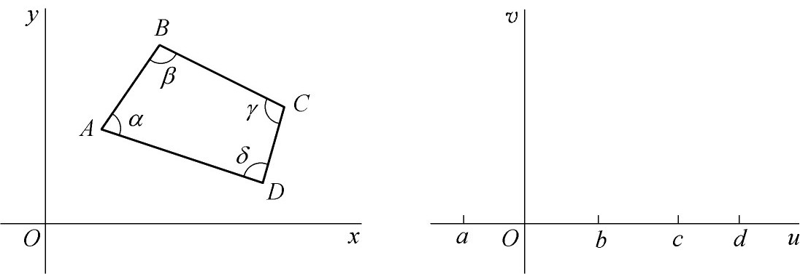
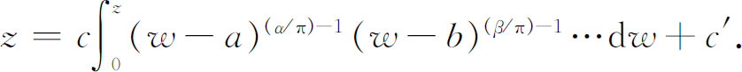

10．保形映射
黎曼为了完善他的博士论文的理论，在结束时给出了函数论在保形映射的几个应用。从一个平面到另一个平面的保形映射的一般性问题（它是由绘制地图而来的）是高斯在1825年解决的。他的结果相当于这样一个事实，即保形映射是由任何一个解析的f（z）建立的———虽然高斯没有用复函数理论。黎曼知道一个解析函数建立了从z平面到w平面的保形映射，但他关心的是将此推广到黎曼面。这就在保形映射中开辟了新的一章。
黎曼在论文的结尾给出了下述定理：两个给定的单连通平面（他将黎曼面上的单连通区域包括进去）可以一对一地并且保形地相互映射，一曲面的一个内点和一个边界点可以对应到另一个曲面上的任意选取的一个内点和一个边界点。整个的映射便由此被确定了。这个定理包含了以下基本结果作为一个特殊情形：给定任何一个单连通区域D，它的边界不止一个点，又给定了这个区域的一点A以及在这点的一个方向T，那么存在一个函数w＝f（z），在D内解析并保形地一对一地把D映射到w平面上中心在原点而半径为1的圆。在这个映射下A变到原点，T变到正实轴方向。这后一个叙述通常称为黎曼映射定理。
黎曼是用狄利克雷原理来证明它的定理的，但由于这个原理当时已被看出有毛病，所以数学家们就寻求一个正确的证明。卡尔·诺伊曼（Carl Gottfried Neumann）和施瓦茨（Hermann Amandus Schwarz）在1870年证明了可以将一个单连通平面区域映射到一个圆。可是，他们不能够处理多叶的单连通区域。
顺便说一下，强调一个单连通区域到一个圆的保形映射的原因是由于这样的事实：将一个单连通区域保形映射到另一个单连通区域，只需将每一个区域映射到一个圆，然后做两个保形映射的乘积就可达到目的。
虽然黎曼映射定理的证明尚未解决，但是保形映射的一些特殊结果却被得到了。其中对于解偏微分方程最有用的一个是施瓦茨(44)和克里斯托费尔（Elwin Bruno Christoffel）(45)给出的。他们的定理说明如何把z平面上的一个多边形及其

图27.9
内部（图27.8）保形映射到w平面的上半部。这个映射由下面的积分给出：

其中c和c′可以从多边形的位置确定出来，而a，b，c，…对应于A，B，C，…。这个映射对于求解位势（拉普拉斯）方程是很有用的。